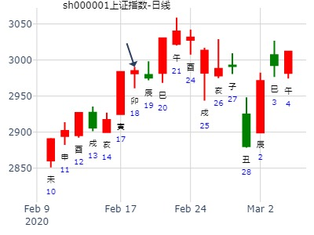
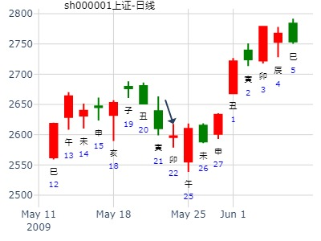

主帖标题: T-Z-D上证指数擂台赛第七场第2局（2020年2月18日）Z方
公历起卦时间：2020年2月18日9时6分 (手工指定)
干支：庚子年 戊寅月 辛卯日 癸巳时 （日空：午未）
神煞：驿马－巳 桃花－子 日禄－酉 贵人－寅，午
艮宫：山泽损 离宫：山水蒙
六神 伏神 本 卦 变 卦
螣蛇 官鬼丙寅木 ▅▅▅▅▅ 应 官鬼丙寅木 ▅▅▅▅▅
勾陈 妻财丙子水 ▅▅ ▅▅ 妻财丙子水 ▅▅ ▅▅
朱雀 兄弟丙戌土 ▅▅ ▅▅ 兄弟丙戌土 ▅▅ ▅▅ 世
青龙 子孙丙申金 兄弟丁丑土 ▅▅ ▅▅ 世 父母戊午火 ▅▅ ▅▅
玄武 官鬼丁卯木 ▅▅▅▅▅ 兄弟戊辰土 ▅▅▅▅▅
白虎 父母丁巳火 ▅▅▅▅▅ ○→ 官鬼戊寅木 ▅▅ ▅▅ 应

主帖标题: 浅谈3.7日大盘走势
2011年 3月 4日 15时 0分 (起卦方式：手动指定)
干支：辛卯年 庚寅月 戊午日 庚申时 日空亡：子丑
神煞：驿马－申 桃花－卯 日禄－巳 贵人－丑，未
艮宫：山泽损 离宫：山水蒙
六神 伏神 本 卦 变 卦
朱雀 官鬼寅木 ▅▅▅▅▅ 应 官鬼寅木 ▅▅▅▅▅
青龙 妻财子水 ▅▅ ▅▅ 妻财子水 ▅▅ ▅▅
玄武 兄弟戌土 ▅▅ ▅▅ 兄弟戌土 ▅▅ ▅▅ 世
白虎 子孙申金 兄弟丑土 ▅▅ ▅▅ 世 父母午火 ▅▅ ▅▅
螣蛇 官鬼卯木 ▅▅▅▅▅ 兄弟辰土 ▅▅▅▅▅
勾陈 父母巳火 ▅▅▅▅▅ ○→ 官鬼寅木 ▅▅ ▅▅ 应
老怪鬼谈：动爻父母爻化鬼爻，盘整向上走势，早盘走势还好，午盘高位盘整，起伏明显
早盘开盘起伏一波浪，然后盘整线上
二爻鬼爻主盘整，向上趋势不变
三爻丑土空，申金透出，动爻克合，月破，日建克制，子孙本主涨，看来早盘的尾盘有回调的迹象
午盘开盘戌土主跌，动爻生，日建生，月建克，主有气，看跌走势，变爻克制，先主跌后小反弹
妻财子水，空亡，日建冲空为实，涨跌互见走势，无明显特征
六爻的鬼爻是尾盘走势，鬼主盘整震荡，尾盘看涨。
综合判断：早盘结束和午盘开始四十分钟，有回调迹象，其余时刻盘整向上走势，尤其尾盘向上趋势明显。参考~~~~今天发烧，头晕晕~~~~还要加班干活~~~郁闷
注：理论一大堆，最后结论全错。
主帖标题: 5.18---5.22上证指数趋势预测
己丑年 己巳月 丁卯日 甲辰时 旬空:【戌亥】 星期五 手工指定
【六兽】 【伏神】 山泽损【艮宫】 山水蒙【离宫】
青龙 ▅▅▅▅▅ 官鬼丙寅木 应 ▅▅▅▅▅ 官鬼丙寅木
玄武 ▅▅ ▅▅ 妻财丙子水 ▅▅ ▅▅ 妻财丙子水
白虎 ▅▅ ▅▅ 兄弟丙戌土 ▅▅ ▅▅ 兄弟丙戌土 世
螣蛇 子孙丙申金 ▅▅ ▅▅ 兄弟丁丑土 世 ▅▅ ▅▅ 父母戊午火
勾陈 ▅▅▅▅▅ 官鬼丁卯木 ▅▅▅▅▅ 兄弟戊辰土
朱雀 ▅▅▅▅▅ 父母丁巳火 Ｏ→▅▅ ▅▅ 官鬼戊寅木 应
周五，看涨。
[此贴子已经被作者于2009-5-22 9:33:00编辑过]

主帖标题: 问：SZZS 5.12日与5.13日收盘
ppm555 发表于 2020-5-9 14:05
欢迎探讨..
问：5.11SZZS收盘情况？即时得：损之蒙
庚子 辛巳 壬子 丁未 (寅卯空) 庚子年四月十七(2020/05/09 14:32:09)
山泽损 山水蒙
白虎 官鬼寅木 ／ 应 官鬼寅木 ／
腾蛇 妻财子水 ∥ 妻财子水 ∥
勾陈 兄弟丙戌 ∥ 兄弟丙戌 ∥ 离
子孙申金：朱雀 兄弟丑土 ∥ 艮 父母午火 ∥
青龙 官鬼卯木 ／ 兄弟辰土 ／
玄武 父母巳火 ○ 官鬼寅木 ∥ 应
涨
主帖标题: 周卦例收集2020.05.11-----15上证指数
8大黑山老师
公历时间：2020年5月11日9时58分 农历时间：庚子年 四月十九日巳时
干 支：庚子年 辛巳月 甲寅日 己巳时
旬 空：辰巳 申酉 子丑 戌亥
神 煞：驿马─申 桃花─卯 日禄─寅 贵人─丑，未
艮宫：山泽损 离宫：山水蒙
六神 伏 神 【本 卦】 【变 卦】
玄武 ▄▄▄▄▄ 官鬼丙寅木 应 ▄▄▄▄▄ 官鬼丙寅木
白虎 ▄▄ ▄▄ 妻财丙子水 ▄▄ ▄▄ 妻财丙子水
螣蛇 ▄▄ ▄▄ 兄弟丙戌土 ▄▄ ▄▄ 兄弟丙戌土 世
勾陈 子孙丙申金 ▄▄ ▄▄ 兄弟丁丑土 世 ▄▄ ▄▄ 父母戊午火
朱雀 ▄▄▄▄▄ 官鬼丁卯木 ▄▄▄▄▄ 兄弟戊辰土
青龙 ▄▄▄▄▄ 父母丁巳火 ○ ▄▄ ▄▄ 官鬼戊寅木 应
多为数理卦，非手摇卦
王占事：000063中兴通讯下半月行情？
起卦方式：手动摇卦 易经股市论坛 www.yijingstock.com 在线排盘系统
公历时间：2014年7月15日18时42分
干 支：甲午年 辛未月 丁亥日 己酉时
旬 空：辰巳 戌亥 (午未) 寅卯
艮宫：山泽损 离宫：山水蒙
六神 伏 神 【本 卦】 【变 卦】
青龙 ▄▄▄▄▄ 官鬼丙寅木 应 ▄▄▄▄▄ 官鬼丙寅木
玄武 ▄▄ ▄▄ 妻财丙子水 ▄▄ ▄▄ 妻财丙子水
白虎 ▄▄ ▄▄ 兄弟丙戌土 ▄▄ ▄▄ 兄弟丙戌土 世
螣蛇 子孙丙申金 ▄▄ ▄▄ 兄弟丁丑土 世 ▄▄ ▄▄ 父母戊午火
勾陈 ▄▄▄▄▄ 官鬼丁卯木 ▄▄▄▄▄ 兄弟戊辰土
朱雀 ▄▄▄▄▄ 父母丁巳火 O-> ▄▄ ▄▄ 官鬼戊寅木 应
作者：土升金囿 占事：天通股份8到12月的走势
排卦：元亨利贞网六爻在线排盘系统
公历起卦时间：2014年7月31日21时46分 (手工指定)
干支：甲午年 辛未月 癸卯日 癸亥时 （日空：辰巳）
艮宫：山泽损 离宫：山水蒙
六神 伏神 本 卦 变 卦
白虎 官鬼丙寅木 ▅▅▅▅▅ 应 官鬼丙寅木 ▅▅▅▅▅
腾蛇 妻财丙子水 ▅▅ ▅▅ 妻财丙子水 ▅▅ ▅▅
勾陈 兄弟丙戌土 ▅▅ ▅▅ 兄弟丙戌土 ▅▅ ▅▅ 世
朱雀 子孙丙申金 兄弟丁丑土 ▅▅ ▅▅ 世 父母戊午火 ▅▅ ▅▅
青龙 官鬼丁卯木 ▅▅▅▅▅ 兄弟戊辰土 ▅▅▅▅▅
玄武 父母丁巳火 ▅▅▅▅▅ ○→ 官鬼戊寅木 ▅▅ ▅▅ 应
至今不涨。8月15日了。
主帖标题: 7月7日 沪市大盘涨跌？
公历：2015年7月7日6时37分 农历：乙未年五月廿二 星期二
干支：乙未年 壬午月 甲申日 卯时 日空：午未
姓名： 性别：男 出生年：
神煞：贵人：丑、未 驿马：寅 桃花：酉
【本卦】 【变卦】
六神 伏 神 艮宫：山泽损 离宫：山水蒙
玄武 应 ━━━ 官鬼丙寅 ━━━ 官鬼丙寅
白虎 ━ ━ 妻财丙子 ━ ━ 妻财丙子
螣蛇 ━ ━ 兄弟丙戌 世 ━ ━ 兄弟丙戌
勾陈 子孙丙申 世 ━ ━ 兄弟丁丑 ━ ━ 父母戊午
朱雀 ━━━ 官鬼丁卯 ━━━ 兄弟戊辰
青龙 ━━━ 父母丁巳 ○→ 应 ━ ━ 官鬼戊寅
主帖标题: 上证大盘测试局77...
replyreload += ',' + 11012952;公历：2016年07月29日09时15分 星期五
节气：小暑：07月07日00时03分 大暑：07月22日17时30分
真时：2016年07月29日09时15分 北京 天安门(东经116.38度)
农历：丙申年 六月大 廿六日 隅中时分 巳时
干支：丙申 乙未 壬子 乙巳 报数起局阴三局
旬空：辰巳 辰巳 寅卯 寅卯 旬首：甲辰
值符天任在四宫 值使生门在七宫 超级奇门排宫法
┌─────────┬─────────┬─────────┐
│庚 值符 │丁 九天 │壬 九地 │
│ 天任 壬 │ 天冲 戊 │ 天辅 乙 │
│ 惊门 乙 │ 开门 辛 │ 休门 己 禽丙│
│九地 │玄武 │白虎 │
├─────────┼─────────┼─────────┤
│辛 螣蛇○ │己 │乙 玄武 │
│ 天蓬 庚 │ │ 天英 辛 │
│ 死门 戊 │ 丙│ 生门 癸 │
│九天 │ │六合 │
├─────────┼─────────┼─────────┤
│丙 太阴○ │癸 六合 │戊 白虎 马│
│ 天心 丁 │ 天柱 癸 │ 天芮 己 禽丙│
│ 景门 壬 │ 杜门 庚 │ 伤门 丁 │
│值符 │螣蛇 │太阴 │
└─────────┴─────────┴─────────┘
干支：丙申年 乙未月 壬子日 乙巳时 （日空：寅卯）
神煞：驿马－寅 桃花－酉 日禄－亥 贵人－卯，巳
艮宫：山泽损 离宫：山水蒙
六神 伏神 本 卦 变 卦
白虎 官鬼丙寅木 ▅▅▅▅▅ 应 官鬼丙寅木 ▅▅▅▅▅
腾蛇 妻财丙子水 ▅▅ ▅▅ 妻财丙子水 ▅▅ ▅▅
勾陈 兄弟丙戌土 ▅▅ ▅▅ 兄弟丙戌土 ▅▅ ▅▅ 世
朱雀 子孙丙申金 兄弟丁丑土 ▅▅ ▅▅ 世 父母戊午火 ▅▅ ▅▅
青龙 官鬼丁卯木 ▅▅▅▅▅ 兄弟戊辰土 ▅▅▅▅▅
玄武 父母丁巳火 ▅▅▅▅▅ ○→ 官鬼戊寅木 ▅▅ ▅▅ 应
主帖标题: 7月6至7月10日上证指数周测
公历时间：2020年7月6日6时15分 农历时间：庚子年 五月十六日卯时
干 支：庚子年 壬午月 庚戌日 己卯时
旬 空：辰巳 申酉 寅卯 申酉
神 煞：驿马─申 桃花─卯 日禄─申 贵人─丑，未
艮宫：山泽损 离宫：山水蒙
六神 伏 神 【本 卦】 【变 卦】
螣蛇 ▄▄▄▄▄ 官鬼丙寅木 应 ▄▄▄▄▄ 官鬼丙寅木
勾陈 ▄▄ ▄▄ 妻财丙子水 ▄▄ ▄▄ 妻财丙子水
朱雀 ▄▄ ▄▄ 兄弟丙戌土 ▄▄ ▄▄ 兄弟丙戌土 世
青龙 子孙丙申金 ▄▄ ▄▄ 兄弟丁丑土 世 ▄▄ ▄▄ 父母戊午火
玄武 ▄▄▄▄▄ 官鬼丁卯木 ▄▄▄▄▄ 兄弟戊辰土
白虎 ▄▄▄▄▄ 父母丁巳火 ○ ▄▄ ▄▄ 官鬼戊寅木 应
主帖标题: [原创]每日预测沪市大盘方向
公历时间：2009年8月12日9时30分 星期三
农历时间：己丑年六月廿二巳时
干支：己丑年 壬申月 己丑日 己巳时 (旬空：午未)
神煞：驿马—亥 桃花—午 日禄—午 贵人—子，申
艮宫：山泽损 离宫：山水蒙
六神 伏 神 【本 卦】 【变 卦】
勾陈 ▅▅▅▅▅ 官鬼丙寅木 应 ▅▅▅▅▅ 官鬼丙寅木
朱雀 ▅▅ ▅▅ 妻财丙子水 ▅▅ ▅▅ 妻财丙子水
青龙 ▅▅ ▅▅ 兄弟丙戌土 ▅▅ ▅▅ 兄弟丙戌土 世
玄武 子孙丙申金 ▅▅ ▅▅ 兄弟丁丑土 世 ▅▅ ▅▅ 父母戊午火
白虎 ▅▅▅▅▅ 官鬼丁卯木 ▅▅▅▅▅ 兄弟戊辰土
螣蛇 ▅▅▅▅▅ 父母丁巳火 ○→ ▅▅ ▅▅ 官鬼戊寅木 应
两个卦象提示小心大盘有变化，要看清形势方向，重点关注政策，消息化官鬼，有小跌，建议：少许介入．
主帖标题: 六爻预测9日大盘行情
排卦：元亨利贞网六爻在线排盘系统 http://www.china95.net
公历起卦时间：2011年8月9日9时30分 (手工指定)
干支：辛卯年 丙申月 丙申日 癸巳时 （日空：辰巳）
神煞：驿马－寅 桃花－酉 日禄－巳 贵人－酉，亥
艮宫：山泽损 离宫：山水蒙
六神 伏神 本 卦 变 卦
青龙 官鬼丙寅木 ▅▅▅▅▅ 应 官鬼丙寅木 ▅▅▅▅▅
玄武 妻财丙子水 ▅▅ ▅▅ 妻财丙子水 ▅▅ ▅▅
白虎 兄弟丙戌土 ▅▅ ▅▅ 兄弟丙戌土 ▅▅ ▅▅ 世
腾蛇 子孙丙申金 兄弟丁丑土 ▅▅ ▅▅ 世 父母戊午火 ▅▅ ▅▅
勾陈 官鬼丁卯木 ▅▅▅▅▅ 兄弟戊辰土 ▅▅▅▅▅
朱雀 父母丁巳火 ▅▅▅▅▅ ○→ 官鬼戊寅木 ▅▅ ▅▅ 应
主帖标题: 8.5 大盘卦---saicjz
主题：300044 开收卦
壬寅 丁未 戊子 庚申 (午未空) 壬寅年六月初五(2022/08/03 15:08:08)
山泽损 山水蒙
朱雀 官鬼寅木 ／ 应 官鬼寅木 ／
青龙 妻财子水 ∥ 妻财子水 ∥
玄武 兄弟丙戌 ∥ 兄弟丙戌 ∥ 世
子孙申金：白虎 兄弟丑土 ∥ 世 父母午火 ∥
腾蛇 官鬼卯木 ／ 兄弟辰土 ／
勾陈 父母巳火 ○ 官鬼寅木 ∥ 应
=================================
主题：300044 反K卦
壬寅 丁未 戊子 庚申 (午未空) 壬寅年六月初五(2022/08/03 15:08:08)
水泽节 坎为水
朱雀 兄弟子水 ∥ 兄弟子水 ∥ 世
青龙 官鬼戌土 ／ 官鬼戌土 ／
玄武 父母戊申 ∥ 应 父母戊申 ∥
白虎 官鬼丑土 ∥ 妻财午火 ∥ 应
腾蛇 子孙卯木 ／ 官鬼辰土 ／
勾陈 妻财巳火 ○ 世 子孙寅木 ∥
主题：300044
壬寅 丁未 戊子 庚申 (午未空) 壬寅年六月初五(2022/08/03 15:08:08)
山泽损 风泽中孚
朱雀 官鬼寅木 ／ 应 官鬼卯木 ／
青龙 妻财子水 × 父母巳火 ／
玄武 兄弟丙戌 ∥ 兄弟辛未 ∥ 世
子孙申金：白虎 兄弟丑土 ∥ 世 兄弟丑土 ∥
腾蛇 官鬼卯木 ／ 官鬼卯木 ／
勾陈 父母巳火 ／ 父母巳火 ／ 应
这个卦是在第一个卦的基础上,人为的取动爻.
请问楼主:这个思路是否可行？
注：数理卦，仅供娱乐。
主帖标题: 占事: 10月A股运，祝大家中秋国庆快乐！！！
[post]10月戌燥土克寅木（A股）的元神水还看跌！！故反弹行情在10月底或11月亥月初 11月亥，或许大涨，但亥合住了寅，也有被套的意思，小心
12子月涨 这是一个有感而起的卦，但愿10月，我的判断有误
占事: 10月A股运 起卦方式：手动摇卦
公历时间：2012年9月28日
干支：壬辰年 己酉月 壬辰日 旬空：午未 寅卯 午未
艮宫：山泽损 离宫：山水蒙
六神 伏 神 【本 卦】 【变 卦】
白虎 ▄▄▄▄▄ 官鬼丙寅木 应 ▄▄▄▄▄ 官鬼丙寅木
螣蛇 ▄▄ ▄▄ 妻财丙子水 ▄▄ ▄▄ 妻财丙子水
勾陈 ▄▄ ▄▄ 兄弟丙戌土 ▄▄ ▄▄ 兄弟丙戌土 世
朱雀 子孙丙申金 ▄▄ ▄▄ 兄弟丁丑土 世 ▄▄ ▄▄ 父母戊午火
青龙 ▄▄▄▄▄ 官鬼丁卯木 ▄▄▄▄▄ 兄弟戊辰土
玄武 ▄▄▄▄▄ 父母丁巳火 O-> ▄▄ ▄▄ 官鬼戊寅木 应
卦，不单反映了未来的信息，也反映了过去的信息:
应寅为A股，反观2--9月，（公历，下同）
2月寅，当权得令，涨
3月卯，跌，（原因：起卦的月令酉克，除了这点看卯月跌，我也看不出其他原因，）
4月辰，涨，其一辰酉日月合，其二，湿土可生木，
5--9，巳午未申酉，均是火泄木，燥土克木元神水，金克木，故5--9月一路跌跌不休
10月戌,.......................
这是一个有感而起的卦，但愿10月，我的判断有误
自从5月11离开股市到现在没有进行过交易，也没有持股过国庆节。
但在其他领域的生意还是亏损了，兄弟持世，一年生意无聊


主帖标题: 占问事宜：9月28曰涨幅前三名？
求测人：某人，男，庚申(1980年)，自动起卦(起卦方式)
占问事宜：9.28涨幅前三名？
公历：2016年9月27日10时46分，星期二。
干支：丙申年 丁酉月 壬子日 乙巳时 (卦身：申)
主变卦 山泽损(艮宫) 之 山水蒙(离宫) [空亡:寅、卯]
白虎 ▅▅▅▅▅ 官鬼丙寅木 应 ▅▅▅▅▅ 官鬼丙寅木
螣蛇 ▅▅ ▅▅ 妻财丙子水 ▅▅ ▅▅ 妻财丙子水
勾陈 ▅▅ ▅▅ 兄弟丙戌土 ▅▅ ▅▅ 兄弟丙戌土 世
朱雀 子孙丙申金 ▅▅ ▅▅ 兄弟丁丑土 世 ▅▅ ▅▅ 父母戊午火
青龙 ▅▅▅▅▅ 官鬼丁卯木 ▅▅▅▅▅ 兄弟戊辰土
玄武 ▅▅▅▅▅○父母丁巳火 ▅▅ ▅▅ 官鬼戊寅木 应
主帖标题: [原创]每日预测深沪两市大盘指数
公历时间：2007年12月14日9时30分 星期五
农历时间：丁亥年十一月初五巳时
干支：丁亥年 壬子月 壬午日 乙巳时 (旬空：申酉)
山泽损 山水蒙
六神 伏神 本 卦 变 卦
白虎 ▅▅▅▅▅ 官鬼寅木 应 ▅▅▅▅▅ 官鬼寅木
腾蛇 ▅▅ ▅▅ 妻财子水 ▅▅ ▅▅ 妻财子水
勾陈 ▅▅ ▅▅ 兄弟戌土 ▅▅ ▅▅ 兄弟戌土 世
朱雀 子孙申金▅▅ ▅▅ 兄弟丑土 世 ▅▅ ▅▅ 父母午火
青龙 ▅▅▅▅▅ 官鬼卯木 ▅▅▅▅▅ 兄弟辰土
玄武 ▅▅▅▅▅ 父母巳火 Ｏ→ ▅▅ ▅▅ 官鬼寅木 应